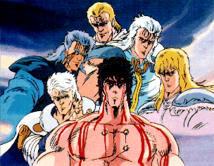

Hokuto no Ken

From the Anime Pocket Guide:
Cast:
Kenshiro ................................... Akira Kamiya
Yuria ................................... Yuriko Yamamoto
Shin .................................... Toshio Furukawa
Rei ..................................... Kaneto Shiozawa
Bat ....................................... Keiichi Nanba
Rin (Hokuto no Ken) .................... Tomiko Suzuki
Rin (Hokuto no Ken 2) ................. Miina Tominaga
Shuu ....................................... Katsuji Mori
Airi ........................................ Arisa Andou
Ken-Oh (Raoh)/Kaioh ........................ Kenji Utsumi
Mamiya ................................... Toshiko Fujita
Rihaku ..................................... Takeshi Aono
Tou ............................................ Mika Doi
Fuuga .................................... Yuuji Mikimoto
Laigar ..................................... Ikuya Sawaki
Yuda ........................................ Bin Shimada
Huey ................................... Kazuyuki Sogabe
Ain ....................................... Ken Yamaguchi
Joker/Narrator ............................ Shigeru Chiba
Amiba/Toki .................................. Takaya Haji
Jagi (movie) ............................. Chikao Ohtsuka
Description:
After the Earth is devastated by nuclear war, society breaks
down into a system where only the strong survive. Often, there
are raids on normal people when 'the strong' decide that they
need something. Into this desolate world comes Kenshiro, master
of the Hokuto Shinken style of martial art. This style destroys
the body from within by striking at one of the numerous
acupuncture points. Kenshiro is a wanderer on a quest to find
his lost love Yuria...taken from him in a battle with Shin long
ago. The battle left Kenshiro with scars in the pattern of the
Big Dipper. During his wanderings, Kenshiro defends the victims
of 'the strong' for he is pledged by his art to defend the weak.
Kenshiro is an extremely honorable, though somber man...almost
the archtype of the tragic hero. The series is high in the
amount of gore created, but the strong central characters seem
to rise above that in audience appeal...
Other Resources
Anime Video Game Resource Center © 1998 by Luis A. Cruz